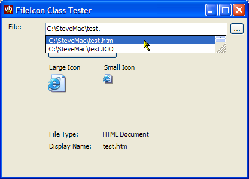

Shell FileIcon Code (27K)
Shell FileIcon Code (27K)
 4 Mar 2003
4 Mar 2003
First Posted
 Auto-File and URL Completion for Text Boxes and Combo Boxes
Auto-File and URL Completion for Text Boxes and Combo Boxes
 Adding XP Visual Styles to Your Visual Basic Application
Adding XP Visual Styles to Your Visual Basic Application

Getting File Icons Using The Shell
A Managed wrapper for the Shell's SHGetFileInfo function
The .NET Framework doesn't provide much in the way for classes to interact with the Shell. This article provides a simple class which wraps the Shell's SHGetFileInfo to extract large and small icons plus the display name and file type for any file.
About the File Icon Class
The FileIcon class provided in the download has a handful or properties and methods which make it easy to get icons for any file. To use it, you specify the FileName and the Flags which control what type of icon to extract, and whether to extract the file type and display name for the file at the same time. These can either be specified whilst constructing the class or set at any time and applied using the GetIcon method.
Example:
using System.Drawing;
using vbAccelerator.Components.Shell;
...
private Icon getSmallFileIcon(string fileName)
{
FileIcon f = new FileIcon(
fileName,
FileIcon.SHGetFileInfoConstants.SHGFI_SMALLICON |
FileIcon.SHGetFileInfoConstants.SHGFI_ICON);
return f.ShellIcon;
}
Alpha Icons
Under Windows XP, 32 bit icons with an alpha channel are supported. However, there are a couple of issues with using these under .NET Framework 1.0:
- Linking to ComCtl32.DLL Version 6.0
- ToBitmap and DrawImage and don't Preserve Alpha
I'll cover these in turn.
Linking to ComCtl32.DLL Version 6.0
I believe .NET Framework 1.1 includes support for ComCtl32.DLL through the XP Visual Styles method, but version 1.0 of the Framework does not. Prior to this version of ComCtl32.DLL, icons do not draw with alpha channels, resulting in an ugly black border where the alpha area of the shadow is:
Icon with Alpha Channel Correctly Drawn
Icon with Alpha Channel Not Drawn
To link your application to ComCtl32.DLL you need to provide a Manifest with your application. As described in the VB article on Manifests, there are two ways of doing this in Windows but unfortunately the VS.NET IDE makes one of them difficult. The first (and simplest) way is to create a file containing the manifest, give it the same name as your executable but with an additional extension ".manifest" and place it in the same directory as the executable. Here is a sample manifest file:
<?xml version="1.0" encoding="UTF-8" standalone="yes" ?>
<assembly xmlns="urn:schemas-microsoft-com:asm.v1" manifestVersion="1.0">
<assemblyIdentity
version="1.0.0.0"
processorArchitecture="X86"
name="CompanyName.ProductName.YourAppName"
type="win32" />
<description>Your application description here</description>
<dependency>
<dependentAssembly>
<assemblyIdentity
type="win32"
name="Microsoft.Windows.Common-Controls"
version="6.0.0.0"
processorArchitecture="X86"
publicKeyToken="6595b64144ccf1df"
language="*" />
</dependentAssembly>
</dependency>
</assembly>
The second way is to embed the manifest as a Win32 resource in your application. This is better but very hard to do in VS.NET because it does not support the /win32res compiler option: here's an excerpt from the documentation:
RemarksThe /win32res option inserts a Win32 resource in the output file. A Win32 resource file can be created with the Resource Compiler. The Resource Compiler is invoked when you compile a Visual C++ program; a .res file is created from the .rc file.
To set this compiler option in the Visual Studio development environment
This compiler option is unavailable in Visual Studio.
To set this compiler option programmatically
This compiler option cannot be changed programmatically.
Compile in.cs and attach a Win32 resource file rf.res to produce in.exe:
csc /win32res:rf.res in.cs
ToBitmap and DrawImage and don't Preserve Alpha
In order to draw the icon with the alpha channel, you need to keep it as an icon. If you use the System.Drawing.Bitmap.ToBitmap on the icon handle, the alpha channel won't be preserved. In this sample the icons are added to ImageLists and drawn from there, however equally you could use a System.Drawing.Icon object to maintain the icon.